A few days after you backed up your first Azure virtual machine (VM), the server had issues. The VM needs to be restored from a backup. You want to restore the VM's disk and attach it to the problematic live server, and then track the restore to ensure that it finished successfully.
In this exercise, you see how to restore a successful backup to replace a VM that became corrupted, and monitor its progress.
Restore a virtual machine in the Azure portal
Create a storage account to use as a staging location
-
If you closed Azure, sign in to the Azure portal by using the same account that you used in the previous exercise.
-
In the Azure portal, enter Storage accounts in the top search bar, and then select it.
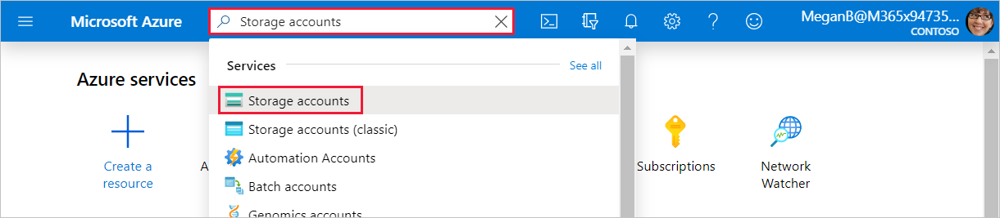
The Storage accounts pane appears.
-
In the menu bar, select Create . The Create a storage account pane appears.
-
On the Basics tab, enter the following values for each setting to create a storage account.
Setting Value Resource group From the dropdown list, select vmbackups . Instance details Storage account name Enter a unique name like restorestagingYYYYMMDD , where YYYYMMDD is replaced with today's date. Region From the dropdown list, select (US) West US 2 . 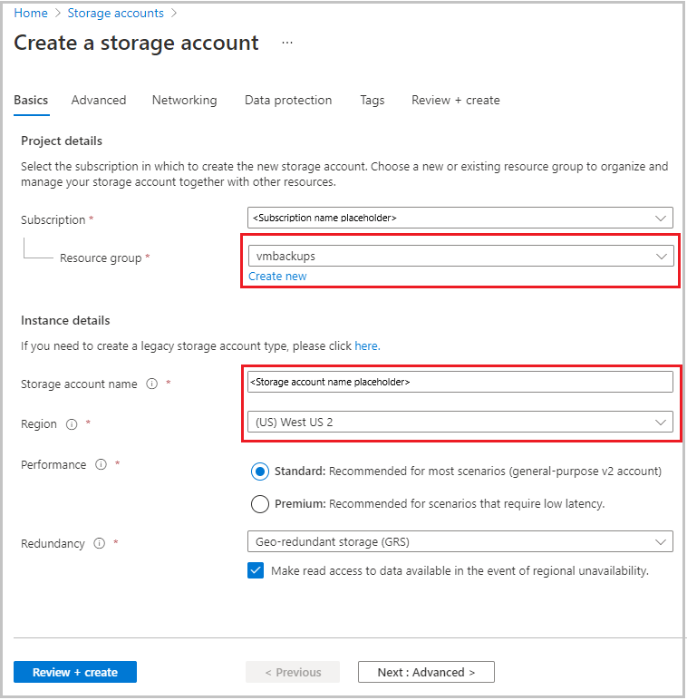
-
Select Review + create .
-
After validation passes, select Create .
Wait for the storage account to be deployed.
Stop the virtual machine
A backup can't be restored if the VM is allocated and running. If you forget to stop the VM and attempt to restore it, you see an error that's similar to the following example.
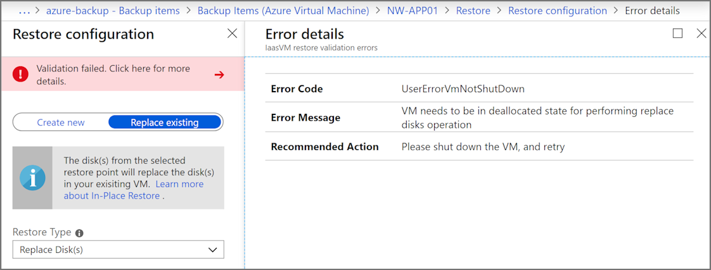
To prevent this error, follow these steps:
-
In the top left of the Azure portal, select Home , select Virtual Machines , and then select NW-APP01 .
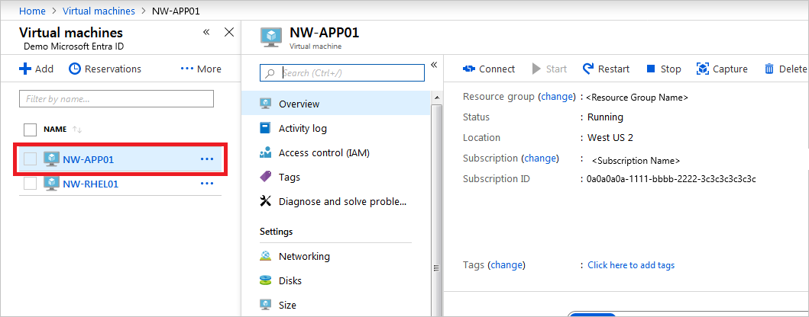
The NW-APP01 virtual machine pane appears.
-
In the menu bar, select Stop .
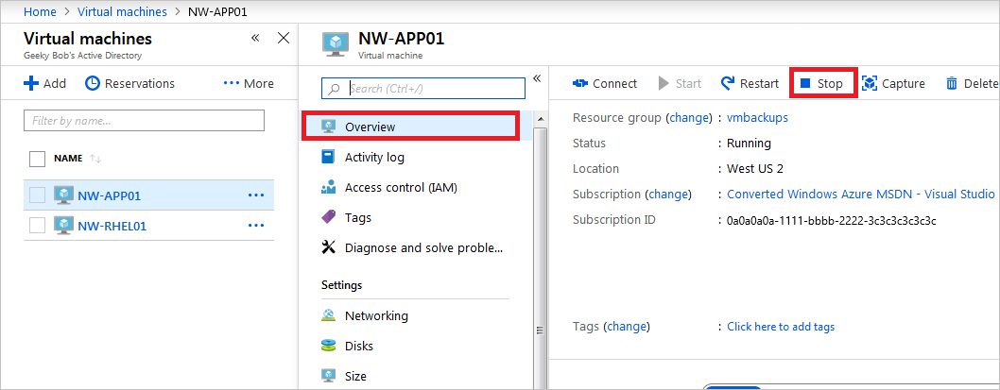
-
In the Stop this virtual machine dialog box, select OK .
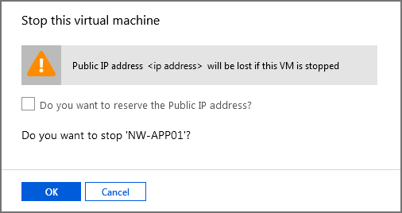
Restore the virtual machine
The Recovery Services vaults are accessible at the subscription level. When you're viewing the VM, Azure provides a quick link to the specific vault under Operations .
-
In the menu pane, scroll to Operations , and select Backup .
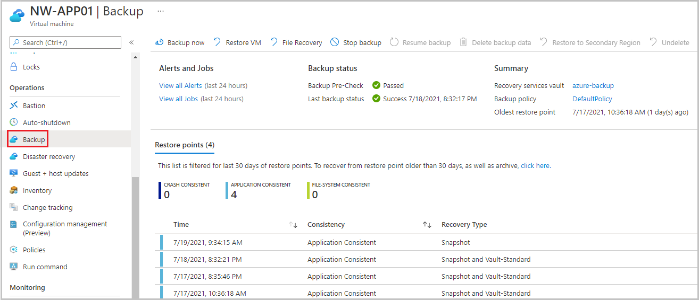
-
To restore the virtual machine, in the menu bar, select Restore VM . The Restore Virtual Machine pane for NW-APP01 appears.
-
Under the Restore point text box, choose Select . The Select restore point pane appears.
-
By default, the start and end date are set for a two week range. Set the Start date to an appropriate date for our restore points ( 07/05/2021 ), select the restore point to use for the recovery, and then select OK .
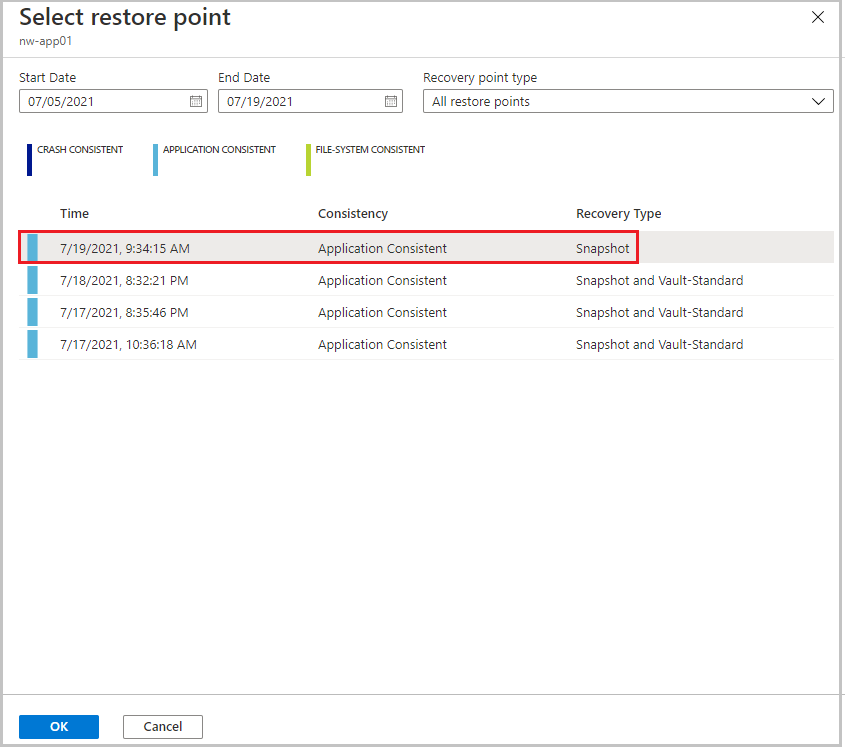
The Restore Virtual Machine pane for NW-APP01 appears.
-
Configure the restore point using the following values for each setting.
Setting Value Restore Configuration Replace existing Select this option. Staging Location From the dropdown list, select the storage account that you previously created. 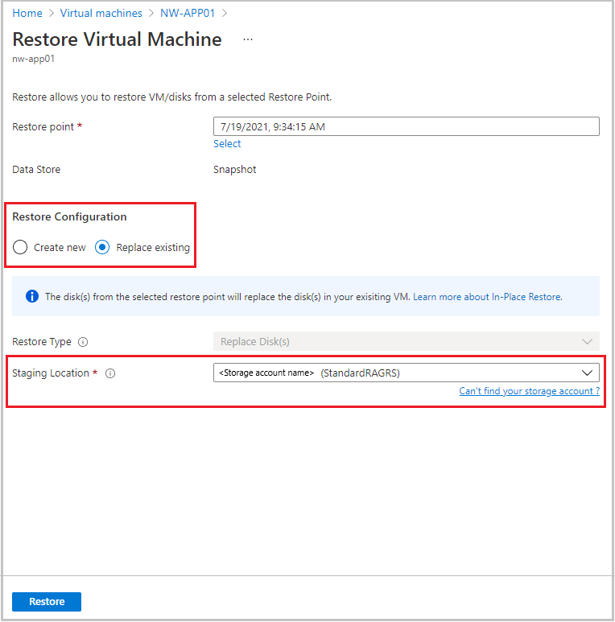
-
Select Restore . The Backup pane for the NW-APP01 virtual machine appears. Notice the notifications in the top right of the toolbar. The latest notification shows Triggering restore for NW-APP01
Track a restore
-
In the Alerts and Jobs section, select View all Jobs . The Backup Jobs pane appears.
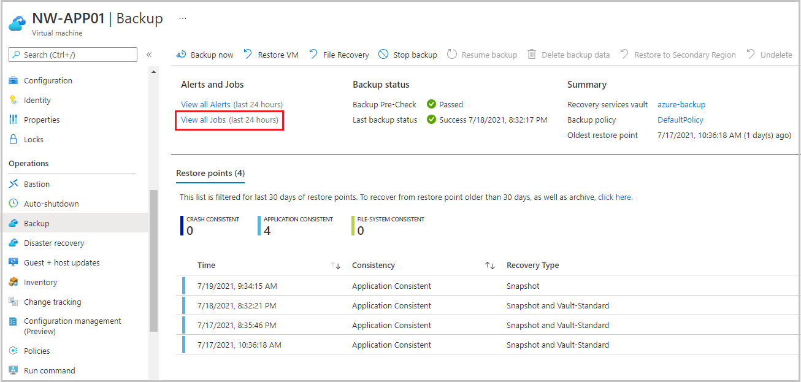
-
In the Details column, select View details for the Restore job.
The Restore pane appears for NW-APP01 .
-
You can monitor the progress of the VM restore job:
- Job details : Details about the restore job you launched for this VM.
- Job status : Real-time progress of the restore job.
- Sub tasks : Name and status of the tasks within the job.
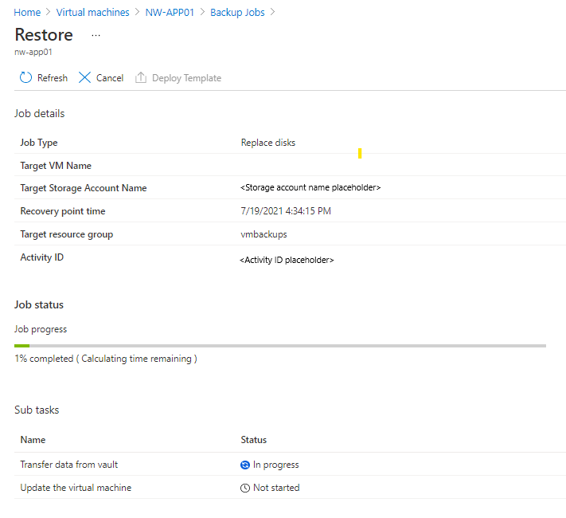
{kind=link}